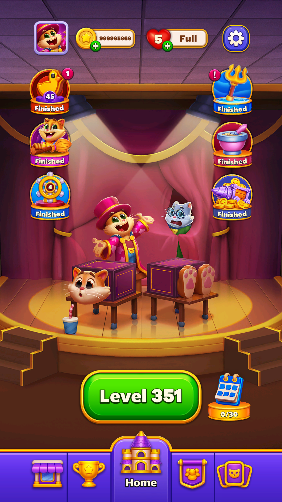
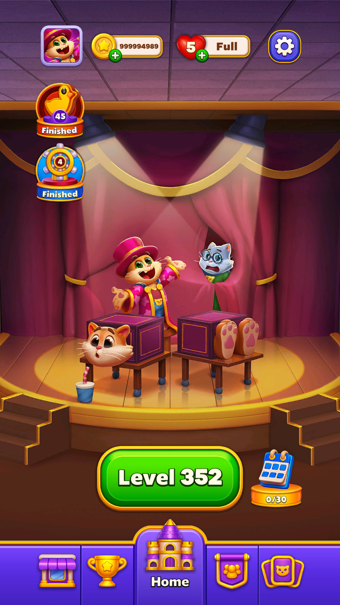

Nhận tài nguyên
Có pending reward trước apply; animation và số dư cần được đọc cùng ledger.
Nguồn: Inventory.json · use_cases/1
 Magic Sort GDD Wiki
Magic Sort GDD Wiki
Giữ một sổ cái chung cho tiền, vật phẩm và quyền theo thời gian để mọi tính năng trao/tiêu cùng ngữ nghĩa. Người chơi cần phân biệt số lượng với thời hạn sử dụng.
3 UC có nhánh liên quan tới case quan sát. Chưa có kết luận toàn bộ tính năng hoặc mọi UC đã pass. Xem bằng chứng và phần còn thiếu.
Có từ đầu game. Số dư khởi tạo và mốc mở khoá booster lấy từ Firebase Remote Config key 'GameEconomyModel': InitialCoin, InitialUndoAmount, InitialShuffleAmount, InitialExtraBottleAmount, InitialFourthBoosterAmount và UndoUnlockAtLevel / ShuffleUnlockAtLevel / ExtraBottleUnlockAtLevel; InventoryService.InitializeForNewDownload() áp các giá trị này cho tài khoản mới và GiveFourthBoosterIfEnabled(amount) cấp booster thứ tư khi bật.
Điểm vào:
Giữ một sổ cái chung cho tiền, vật phẩm và quyền theo thời gian để mọi tính năng trao/tiêu cùng ngữ nghĩa. Người chơi cần phân biệt số lượng với thời hạn sử dụng.
Kiếm thưởng → chờ trình diễn/apply → xem số dư → tiêu cho mục tiêu → lưu và hồi theo thời gian.
Lớp diễn giải thiết kế từ source và dossier hiện có; outcome là expected. Quan sát round2 được gọi rõ; chưa phát sinh playtest hoặc xác nhận backend mới.
Nhận thưởng và theo dõi vật phẩm bay về thanh tiền tệ.
Điều kiện / luật: Có pending reward trước apply; animation và số dư cần được đọc cùng ledger.
Kết quả theo đặc tả: Không coi popup hiện số thưởng là số dư đã cộng.
Mở ô mạng khi còn thiếu và xem thời gian hồi.
Điều kiện / luật: LifeFillDate là mốc thời gian; dùng UTC không tự chứng minh chống chỉnh giờ.
Kết quả theo đặc tả: Thời gian và số mạng được tính từ trạng thái kho.
15/11/2026 · LifeFillDate đã đổi ngay khi vào level352Chọn Refill khi thiếu mạng và có coin.
Điều kiện / luật: Giá  900 coin trong các nguồn default/cache nêu tại config. Native 0.0.3063 trả trần Magic Pass là 8; chưa đối chiếu hàm này ở 0.0.3129 hoặc ledger finite-life của Pass active.
900 coin trong các nguồn default/cache nêu tại config. Native 0.0.3063 trả trần Magic Pass là 8; chưa đối chiếu hàm này ở 0.0.3129 hoặc ledger finite-life của Pass active.
Kết quả theo đặc tả: Tiêu coin và phục hồi mạng theo nhánh hợp lệ.
15/11/2026 · Refill900coin từ4 lên5FullCó pending reward trước apply; animation và số dư cần được đọc cùng ledger.
LifeFillDate là mốc thời gian; dùng UTC không tự chứng minh chống chỉnh giờ.
Giá 900 coin trong các nguồn default/cache nêu tại config. Native 0.0.3063 trả trần Magic Pass là 8; chưa đối chiếu hàm này ở 0.0.3129 hoặc ledger finite-life của Pass active.
| Tình huống | Cách xử lý theo nguồn | Căn cứ |
|---|---|---|
| Vì sao pending cần tách khỏi số dư? | Lượt 352 → 353 cho thấy popup 20 coin trước thời điểm ledger cộng; phải chỉ đúng cửa sổ grant thay vì kết luận mất thưởng từ một frame. | Nhận định thiết kế từ cơ chế có nguồn; không phải hiệu quả đã đo. |
| Điều kiện | Hành vi mong đợi | Phạm vi đã kiểm |
|---|---|---|
| Nhánh lỗi, gián đoạn hoặc chuyển trạng thái của Kho đồ & tiền tệ | Thoát giữa animation cần kiểm pending/apply và persistence; không hứa chống mất thưởng ở mọi crash. | Theo UC/source trong hồ sơ; runtime chỉ có giá trị ở đúng case và snapshot đã liên kết. |
Lượt 352 → 353 cho thấy popup 20 coin trước thời điểm ledger cộng; phải chỉ đúng cửa sổ grant thay vì kết luận mất thưởng từ một frame.
Suy luận thiết kế; không thay bảng cấu hình hoặc giới hạn thực nghiệm.
1000 coin,  3 Undo,
3 Undo,  3 Shuffle,
3 Shuffle,  3 Extra Bottle và 3 booster thứ tư nếu bật (InitializeForNewDownload).20 coin, level khó 60 coin và level siêu khó 100 coin (GameEconomyModel).
3 Extra Bottle và 3 booster thứ tư nếu bật (InitializeForNewDownload).20 coin, level khó 60 coin và level siêu khó 100 coin (GameEconomyModel). 5 mạng.900 coin với lý do tiêu Refill (2); game cũng hẹn hoặc hủy thông báo mạng đầy tương ứng.300 coin, Extra Bottle, Mega Shuffle và Reveal 900 coin.900 coin lần đầu, 1900 lần hai và 2300 lần ba trong cùng một màn; cờ IsFirstPlayOnFree mặc định false.
5 mạng.900 coin với lý do tiêu Refill (2); game cũng hẹn hoặc hủy thông báo mạng đầy tương ứng.300 coin, Extra Bottle, Mega Shuffle và Reveal 900 coin.900 coin lần đầu, 1900 lần hai và 2300 lần ba trong cùng một màn; cờ IsFirstPlayOnFree mặc định false.InventoryService nạp InventoryModel qua ISaveLoad và đăng ký ISyncable (sync name 'InventoryModel'). Mọi số dư nằm trong các Dictionary khoá bằng (int)CurrencyType: CurrencyAmountByType, TimedCurrencyEndDateByType, LimitlessCurrencyEndDateByType, cùng ba dictionary 'pending' tương ứng và PendingCollectionPackAmountByType. Khi có thưởng, RewardService.QueueReward/QueueRewards đẩy vào OrderedRewardQueue hoặc QueueBulkReward(s) vào BulkRewardQueue; PendRewards(rewards) gọi InventoryService.Pending(currencyType, amount|timeSpan) để cộng vào phần chờ. Animation chạy: OrderedRewardAnimationService.PlayRewardAnimationAndEarnOnAnimationComplete(rewardModel, initialPosition) tách một phần thưởng lớn thành nhiều icon nhỏ (GetRewardsAmountsForCoins / GetRewardsAmountsForBoosters), bay từ vị trí xuất phát tới CurrencyRewardTarget của loại tiền tương ứng rồi mới ApplyPending → Earn. Với thưởng lớn, BulkRewardAnimationService.ShowRewards(rewards, currencyEarnReason) mở popup nền mờ, RevealRewards() lộ từng món, người chơi bấm Continue → OnClaimMoveCurrencies() → GatherRewards() gom về ô tiền; MapRewardToViewCount() giới hạn số icon hiển thị khi số lượng lớn, GetDynamicRewardPositions(count, maxWidth = 6, maxHeight = 6) tự xếp lưới. Gói thẻ sưu tập có nhánh riêng (StartCollectionPackOpeningSequence, PlayActiveCardPackOpenSequence, nút Claim Cards và Skip). Tiêu dùng: InventoryService.Spend(currencySpendReason, currencyType, amount) sau khi DoesEnoughVisibleCurrency() xác nhận đủ; BoosterManager.TryUseBooster(currencyType) kiểm tra CanUseBooster rồi UseBooster. Mạng: GetSecondsToFillOneLife() lấy hiệu giữa LifeFillDate và DateTime.UtcNow chia dư cho GameEconomyModel.RefillDurationAsMinutes × 60; GetMaxLifeAmount() trả GameEconomyModel.MaxLifeAmount, hoặc GetMagicPassMaxLifeAmount() khi IsMagicPassActive(); UpdateLifeFilledNotification() hẹn/huỷ thông báo mạng đầy qua NotificationService. Mọi thay đổi gọi MarkDataForLateUpdate(), LateUpdate() lưu và SyncService đẩy lên server.
| Mục | Giá trị mặc định | Ghi chú |
|---|---|---|
| initialCoin | 1000 coin | Số coin ban đầu |
| initialUndoAmount | 3 Undo | |
| initialShuffleAmount | 3 Shuffle | |
| initialExtraBottleAmount | 3 Extra Bottle | |
| initialFourthBoosterAmount | 3 booster thứ tư | Chỉ cấp khi booster thứ tư được bật |
| maxLifeAmount | 5 mạng | Trần mạng mặc định |
| refillDurationAsMinutes | 30 phút | Thời gian hồi một mạng |
| Loại level | Điều kiện | Phần thưởng |
|---|---|---|
| Level thường | Thắng một level thường |  20Coin 20Coin |
| Level khó | Thắng một level Hard | 60Coin |
| Level siêu khó | Thắng một level Super Hard | 100Coin |
| Mục | Giá | Lý do tiêu |
|---|---|---|
| Undo | 300 coin | CurrencySpendReason.Boosters (1) |
| Shuffle | 300 coin | CurrencySpendReason.Boosters (1) |
| Extra Bottle | 900 coin | CurrencySpendReason.Boosters (1) |
| Mega Shuffle | 900 coin | CurrencySpendReason.Boosters (1) |
| Reveal | 900 coin | CurrencySpendReason.Boosters (1) |
| Đầy mạng (Refill) | 900 coin | CurrencySpendReason.Refill (2) |
| Play On lần 1 | 900 coin | CurrencySpendReason.PlayOn (3) miễn phí nếu IsFirstPlayOnFree bật |
| Play On lần 2 | 1900 coin | CurrencySpendReason.PlayOn (3) |
| Play On lần 3 | 2300 coin | CurrencySpendReason.PlayOn (3) |
| Tạo đội | TeamsService.GetTeamCreateCost() (server) | CurrencySpendReason.TeamCreate (4) |
| Năng lượng Merge Mini Game | (server) | CurrencySpendReason.MergeMiniGame (5) |
| Booster | Level mở khóa | Ghi chú |
|---|---|---|
| Undo | Level 15 | undoUnlockAtLevel |
| Shuffle | Level 15 | shuffleUnlockAtLevel |
| Extra Bottle | Level 15 | extraBottleUnlockAtLevel |
| Mega Shuffle | Có tutorial riêng (ShouldShowMegaShuffleTutorial) | Không có mốc level trong config |
| Reveal | Có tutorial riêng (ShouldShowRevealTutorial) | Không có mốc level trong config |
| Mã | Loại | Ghi chú |
|---|---|---|
| 0 | None | Giá trị rỗng |
| 1 | Coin | Tiền tệ chính |
| 2 | Life | Mạng có cả dạng số lượng và dạng vô hạn theo thời gian |
| 4 | Undo | Booster |
| 5 | Shuffle | Booster |
| 6 | ExtraBottle | Booster |
| 7 | NoAds | Quyền bỏ quảng cáo có thể theo hạn hoặc vĩnh viễn |
| 13 | Chest | Rương 33 ChestId trong ChestSpriteConfig |
| 14 | CollectionPack | Gói thẻ sưu tập |
| 15 | ProfileToken | Token hồ sơ |
| 16 | DuckMultiplier | Vật phẩm x2 của Duck Festival |
| 17 | MiniGameTrident | Vé mini game |
| 18 | MegaShuffle | Booster mở rộng |
| 19 | Reveal | Booster mở rộng |
| 20 | WheelOfFortuneCurrency | Đồng xu Wheel of Fortune |
| 21 | MergeMiniGameEnergy | Năng lượng mini game merge |
| Mã | Nguồn thưởng |
|---|---|
| 0 | None |
| 1 | LevelWin |
| 2 | HardSuperHardLevel |
| 3 | Shop |
| 4 | StreakTournament |
| 5 | Refill |
| 6 | Debugger |
| 7 | WeeklyTournament |
| 8 | Rewarded2XCoin |
| 9 | RewardedOneLife |
| 10 | TowerWinStreak |
| 11 | MagicStreakTournament |
| 12 | JetpackRace |
| 13 | SkyJump |
| 14 | EndlessPortal |
| 15 | DailyLevelWin |
| 16 | DailyProgressBarStep |
| 17 | SpecialOffer |
| 18 | WelcomeBack |
| 19 | BroomStreak |
| 20 | PawTouchOffer |
| 21 | Compensation |
| 22 | Journey |
| 23 | MagicStreakGae |
| 24 | ChampionsLeague |
| 25 | JetpackJoinLimitless |
| 26 | MagicLab |
| 27 | NoAdsOffer |
| 28 | JetpackRaceWithStage |
| 29 | ChooseOneSpecialOffer |
| 30 | DailyReward |
| 31 | SkyJumpWithStage |
| 32 | WatchAndWin |
| 33 | CollectionChest |
| 34 | CollectionThemeCompleted |
| 35 | CollectionCompleted |
| 36 | CollectionActivated |
| 37 | TeamCardHelp |
| 38 | TeamsFreeLife |
| 39 | TeamsHelpSupport |
| 40 | TreasureDrill |
| 41 | MagicPass |
| 42 | MagicPassFinished |
| 43 | MagicPassTicketClaim |
| 44 | DuckFestival |
| 45 | WheelOfFortune |
| 46 | TeamArena |
| 47 | TeamArenaContribution |
| 48 | TeamArenaProgress |
| 49 | MiniGameUnderwaterTreasures |
| 50 | TeamQuest |
| 51 | Referral |
| 52 | FacebookLogin |
| 53 | MiniGameOffer |
| 54 | BoatRushRaceCompleted |
| 55 | BoatRushTierCompleted |
| 56 | BoatRushJoinLimitless |
| 57 | MergeMiniGameCollectibleItem |
| 58 | MergeMiniGameStageCompleted |
| 59 | MergeMiniGameGrandPrize |
| 60 | WebShopBonus |
| Ngữ cảnh | Phần thưởng | Evidence |
|---|---|---|
| Thắng level | Coin (CurrencyEarnReason.LevelWin HardSuperHardLevel DailyLevelWin) | RewardService.GiveRegularLevelCoinRewards; RewardService.GiveDailyLevelCoinRewards |
| Xem quảng cáo | Coin nhân đôi (Rewarded2XCoin) hoặc 1 mạng (RewardedOneLife) | CurrencyEarnReason.Rewarded2XCoin; CurrencyEarnReason.RewardedOneLife |
| Nguồn xã hội | TeamCardHelp TeamsFreeLife TeamsHelpSupport Referral FacebookLogin | CurrencyEarnReason |
| Bộ sưu tập | CollectionChest CollectionThemeCompleted CollectionCompleted CollectionActivated (kèm token hồ sơ) | CurrencyEarnReason; CurrencyType.ProfileToken |
| Bù trừ từ vận hành | Compensation WebShopBonus | CurrencyEarnReason.Compensation; RewardService.GiveDirectlyRewards |
| Chỉ số | Giá trị | Nguồn |
|---|---|---|
| Coin khởi tạo | 1000 | GameEconomyModel.json: initialCoin |
| Booster khởi tạo | 3 Undo, 3 Shuffle, 3 Extra Bottle, 3 booster thứ tư | GameEconomyModel.json: initial*Amount |
| Số mạng tối đa | 5 | GameEconomyModel.json: maxLifeAmount |
| Thời gian hồi một mạng | 30 phút | GameEconomyModel.json: refillDurationAsMinutes |
| Giá mua đầy mạng | 900 coin | GameEconomyModel.json: refillPrice |
| Giá Play On lần 1 / 2 / 3 | 900 / 1900 / 2300 coin | GameEconomyModel.json: PlayOnPrice, SecondPlayOnPrice, ThirdSecondPlayOnPrice |
| Play On đầu tiên miễn phí | false | GameEconomyModel.json: IsFirstPlayOnFree |
| Giá Undo / Shuffle | 300 coin | GameEconomyModel.json: UndoPrice, ShufflePrice |
| Giá Extra Bottle / Mega Shuffle / Reveal | 900 coin | GameEconomyModel.json: ExtraBottlePrice, MegaShufflePrice, RevealPrice |
| Thưởng coin thắng level thường | 20 coin | GameEconomyModel.json: RegularLevelWinCoinReward |
| Thưởng coin thắng level khó | 60 coin | GameEconomyModel.json: HardLevelWinCoinReward |
| Thưởng coin thắng level siêu khó | 100 coin | GameEconomyModel.json: SuperHardLevelWinCoinReward |
| Level mở khóa booster cơ bản | 15 cho cả Undo, Shuffle và Extra Bottle | GameEconomyModel.json: undoUnlockAtLevel, shuffleUnlockAtLevel, extraBottleUnlockAtLevel |
| Số loại tài nguyên | 16 giá trị (giá trị 3 và 8–12 đã bỏ) | CurrencyType |
| Số lý do tiêu tiền | 6 (None=0, Boosters=1, Refill=2, PlayOn=3, TeamCreate=4, MergeMiniGame=5) | CurrencySpendReason |
| Số lý do nhận thưởng | 61 (None=0 … WebShopBonus=60) | CurrencyEarnReason |
| Ngưỡng bắn sự kiện tiêu coin | 1899 coin (0x76b) | InventoryService.CheckCanSendEventForSpendCoin |
| Khung xếp lưới phần thưởng trong popup | maxWidth 6, maxHeight 6 | BulkRewardAnimationService.GetDynamicRewardPositions |
| Số loại rương có sprite | 25 ánh xạ sprite (ChestId 1–25) trong ChestSpriteConfig 0.0.3063 | ChestSpriteConfig.asset |
| Số bộ sprite library rương | 8 ánh xạ library (ChestId 1–8); file Chest9SpriteLibrary tồn tại riêng nhưng không được map trong config này | ChestSpriteConfig.asset |
| Số trường của InventoryModel | 11 | InventoryModel |
| Tên khối đồng bộ | InventoryModel | InventoryService.GetSyncName |
| Số phân loại animation rút gọn | 4 (None=0, LevelWinCauldron=1, StreakTournament=2, WeeklyTournament=3) | EarnReason |
Đặc tả UC mô tả hành vi theo nguồn. Kết quả mong đợi không phải kết quả đã chạy; case quan sát được liên kết riêng ở từng UC.
Bấm vào từng use case để mở. Mở/đóng tất cả
Chưa có case trực tiếp trong hai lượt review 15–16/11.
Các bước| Actor | System |
|---|---|
| Trigger | Cài mới hoặc InitializeForNewDownload |
| Điều kiện | - |
| Kết quả mong đợi theo nguồn | Người chơi mới có sẵn coin và booster để học cách dùng |
| Quy tắc / số liệu | Giá trị đều từ remote config nên chỉnh được không cần cập nhật app |
| Bằng chứng đặc tả | InventoryService.InitializeForNewDownload; InventoryService.GiveFourthBoosterIfEnabled; GameEconomyModel.InitialCoin |
Chưa có case trực tiếp trong hai lượt review 15–16/11.
Các bước| Actor | System |
|---|---|
| Trigger | Thắng level, mở rương nhỏ, nhận quà lẻ |
| Điều kiện | - |
| Kết quả mong đợi theo nguồn | Số dư trên thanh tăng đúng lúc icon chạm ô, cảm giác thoả mãn |
| Quy tắc / số liệu | CurrencyRewardTarget cho từng CurrencyType đăng ký qua OnCurrencyDisplayerActiveSignal/OnCurrencyDisplayerDeactiveSignal nên nếu ô không hiển thị thì thưởng vẫn được cộng |
| Bằng chứng đặc tả | RewardService.QueueReward; RewardService.GiveNextReward; OrderedRewardAnimationService.PlayRewardAnimationAndEarnOnAnimationComplete; OrderedRewardAnimationService.GetRewardsAmountsForCoins; InventoryService.ApplyPending |
Chưa có case trực tiếp trong hai lượt review 15–16/11.
Các bước| Actor | Player |
|---|---|
| Trigger | Hoàn thành sự kiện, mở rương lớn, nhận thưởng giải |
| Điều kiện | HasBulkRewardByCurrencyEarnReason(currencyEarnReason) = true |
| Kết quả mong đợi theo nguồn | Một popup duy nhất trình bày trọn gói phần thưởng rồi mới cộng vào kho |
| Quy tắc / số liệu | _claimCompletionSource cho luồng gọi await tới khi người chơi bấm nhận; BulkRewardAnimationConfig.asset và BulkRewardCurrencyViewFactory.asset điều khiển hình thức |
| Bằng chứng đặc tả | RewardService.GiveBulkRewards; BulkRewardAnimationService.ShowRewards; BulkRewardAnimationService.RevealRewards; BulkRewardAnimationService.GatherRewards; BulkRewardAnimationService.MapRewardToViewCount |
Chưa có case trực tiếp trong hai lượt review 15–16/11.
Các bước| Actor | Player |
|---|---|
| Trigger | Phần thưởng chứa CollectionPack |
| Điều kiện | - |
| Kết quả mong đợi theo nguồn | Thẻ mới vào bộ sưu tập với hiệu ứng mở gói |
| Quy tắc / số liệu | GetPendingCollectionPack(packType) cho biết còn gói nào chưa mở |
| Bằng chứng đặc tả | InventoryService.PendingCollectionPack; InventoryService.ApplyPendingCollectionPack; BulkRewardAnimationService.StartCollectionPackOpeningSequence; BulkRewardAnimationService.OnClaimCardsButtonDown |
Chưa có case trực tiếp trong hai lượt review 15–16/11.
Các bước| Actor | System |
|---|---|
| Trigger | Thưởng nền hoặc bù trừ (compensation) |
| Điều kiện | - |
| Kết quả mong đợi theo nguồn | Số dư tăng ngay, không chặn luồng người chơi |
| Quy tắc / số liệu | Dùng cho CurrencyEarnReason.Compensation, WebShopBonus và các trường hợp nền |
| Bằng chứng đặc tả | RewardService.GiveDirectlyReward; RewardService.GiveDirectlyRewards; InventoryService.Earn |
Có bằng chứng một số nhánh; chưa full UC pass.
15/11/2026 · LifeFillDate đã đổi ngay khi vào level352Các bước| Actor | System |
|---|---|
| Trigger | Thời gian trôi (kể cả offline) |
| Điều kiện | Mạng < GetMaxLifeAmount() |
| Kết quả mong đợi theo nguồn | Đồng hồ đếm ngược trên thanh mạng và thông báo khi đầy |
| Quy tắc / số liệu | Code dùng UtcNow; khả năng chống chỉnh giờ chưa được chứng minh bằng riêng API thời gian này; RefillDurationAsMinutes và MaxLifeAmount từ remote config |
| Bằng chứng đặc tả | InventoryService.GetSecondsToFillOneLife; InventoryService.UpdateLifeFilledNotification; InventoryService.GetMaxLifeAmount; InventoryModel.LifeFillDate |

Chưa có case trực tiếp trong hai lượt review 15–16/11.
Các bước| Actor | System |
|---|---|
| Trigger | Kích hoạt Magic Pass |
| Điều kiện | IsMagicPassActive() = true |
| Kết quả mong đợi theo nguồn | Người mua pass giữ được nhiều mạng hơn |
| Quy tắc / số liệu | Cùng cơ chế với giới hạn mạng chuẩn, chỉ đổi trần |
| Bằng chứng đặc tả | InventoryService.GetMaxLifeAmount; InventoryService.IsMagicPassActive; InventoryService.GetMagicPassMaxLifeAmount |
Có bằng chứng một số nhánh; chưa full UC pass.
15/11/2026 · Refill900coin từ4 lên5FullCác bước| Actor | Player |
|---|---|
| Trigger | Bấm Refill trong popup More Lives ('RefillPopupTitle', 'Refill') |
| Điều kiện | DoesEnoughVisibleCurrency(CurrencyType.Coin, RefillPrice) |
| Kết quả mong đợi theo nguồn | Mạng đầy ngay, coin trừ tương ứng |
| Quy tắc / số liệu | RefillPrice từ remote config; localize 'RefillPopupWarning' = "Time to next life" |
| Bằng chứng đặc tả | InventoryService.Spend; InventoryService.DoesEnoughVisibleCurrency; GameEconomyModel.RefillPrice; CurrencySpendReason.Refill |
Chưa có case trực tiếp trong hai lượt review 15–16/11.
Các bước| Actor | Player |
|---|---|
| Trigger | Nhận thưởng dạng thời lượng (pass, offer, sự kiện) |
| Điều kiện | CanHasLimitlessCurrencyByType(CurrencyType.Life) |
| Kết quả mong đợi theo nguồn | Không tốn mạng khi vào level trong suốt thời gian còn hạn |
| Quy tắc / số liệu | RewardModel.IsDurationBased() phân biệt thưởng theo thời lượng với thưởng theo số lượng. Có nhánh song song EarnTimed/PendingTimed cho tiền tệ 'có hạn dùng' khác |
| Bằng chứng đặc tả | InventoryService.EarnLimitless; InventoryService.HasVisibleLimitlessCurrencyByType; InventoryService.GetVisibleLimitlessCurrencyEndDateByType; InventoryService.ResetLimitlessCurrencyEndDateByType; RewardModel.IsDurationBased |
Chưa có case trực tiếp trong hai lượt review 15–16/11.
Các bước| Actor | Player |
|---|---|
| Trigger | Bấm nút Undo / Shuffle / ExtraBottle / MegaShuffle / Reveal |
| Điều kiện | CanUseBooster(currencyType) và điều kiện bàn chơi cho phép |
| Kết quả mong đợi theo nguồn | Hiệu ứng booster áp lên bàn chơi và trừ 1 lượt |
| Quy tắc / số liệu | Hết booster thì mua bằng coin theo GameEconomyModel: UndoPrice, ShufflePrice, ExtraBottlePrice, MegaShufflePrice, RevealPrice (GetPriceByCurrency(currencyType)); analytics 'booster_purchased' + 'booster_price' |
| Bằng chứng đặc tả | BoosterManager.TryUseBooster; BoosterManager.UseBooster; BoosterManager.CanUseMegaShuffle; InventoryService.Spend; GameEconomyModel.GetPriceByCurrency |
Chưa có case trực tiếp trong hai lượt review 15–16/11.
Các bước| Actor | System |
|---|---|
| Trigger | Đạt level mở khoá booster |
| Điều kiện | - |
| Kết quả mong đợi theo nguồn | Người chơi được dạy từng booster đúng thời điểm |
| Quy tắc / số liệu | PlayerService.SetMegaShuffleIntroduced()/SetRevealIntroduced() và các hàm Reset… cho phép dạy lại khi cần |
| Bằng chứng đặc tả | BoosterManager.TryIntroduceNewBooster; BoosterManager.ShouldShowRevealTutorial; PlayerService.IsMegaShuffleIntroduced; PlayerService.SetRevealIntroduced; GameEconomyModel.UndoUnlockAtLevel |
Chưa có case trực tiếp trong hai lượt review 15–16/11.
Các bước| Actor | Player |
|---|---|
| Trigger | Hết nước / kẹt bàn |
| Điều kiện | Đủ coin theo bậc giá |
| Kết quả mong đợi theo nguồn | Người chơi tiếp tục màn thay vì mất mạng |
| Quy tắc / số liệu | Localize 'PlayOn', 'StuckAreYouSurePlayOn1' = "+1 Play On", 'MagicPassOfferPlayOn'. PlayOnWithRewardedService cho phép xem quảng cáo thay vì trả coin |
| Bằng chứng đặc tả | InventoryService.GrantSingleUseFreePlayOn; InventoryService.HasFreePlayOn; InventoryService.UseFreePlayOn; GameEconomyModel.PlayOnPrice; GameEconomyModel.IsFirstPlayOnFree; InventoryModel.UsedPlayOnForFree |
Chưa có case trực tiếp trong hai lượt review 15–16/11.
Các bước| Actor | Player |
|---|---|
| Trigger | Tạo đội mới |
| Điều kiện | Đủ coin |
| Kết quả mong đợi theo nguồn | Coin trừ, đội được tạo |
| Quy tắc / số liệu | CurrencySpendReason chỉ có 6 giá trị: None=0, Boosters=1, Refill=2, PlayOn=3, TeamCreate=4, MergeMiniGame=5 — tức toàn bộ đầu ra của coin chỉ gồm booster, refill, play on, tạo đội và mini game merge |
| Bằng chứng đặc tả | InventoryService.Spend; CurrencySpendReason.TeamCreate; TeamsService.GetTeamCreateCost |
Chưa có case trực tiếp trong hai lượt review 15–16/11.
Các bước| Actor | System |
|---|---|
| Trigger | Rời màn hình giữa lúc animation chưa xong, hoặc mở lại game |
| Điều kiện | Có mục pending |
| Kết quả mong đợi theo nguồn | Không mất thưởng dù thoát giữa chừng |
| Quy tắc / số liệu | GetCurrencyAmountByTypeIncludingPending / GetLimitlessCurrencyEndDateByTypeIncludingPending cho phép logic khác tính cả phần chờ |
| Bằng chứng đặc tả | InventoryService.ApplyAllPending; InventoryService.GetCurrencyAmountByTypeIncludingPending; RewardService.ResetAllRewards |
Chưa có case trực tiếp trong hai lượt review 15–16/11.
Các bước| Actor | System |
|---|---|
| Trigger | Bấm mua bất kỳ |
| Điều kiện | - |
| Kết quả mong đợi theo nguồn | Không bao giờ để số dư âm |
| Quy tắc / số liệu | 'Visible' là số dư đã chốt, không tính phần pending — tránh cho phép tiêu tiền chưa nhận xong |
| Bằng chứng đặc tả | InventoryService.DoesEnoughVisibleCurrency; InventoryService.GetVisibleCurrencyAmountByType |
Chưa có case trực tiếp trong hai lượt review 15–16/11.
Các bước| Actor | System |
|---|---|
| Trigger | Counter attribution tiêu coin vượt ngưỡng khi SpendEventSent còn false |
| Điều kiện | InventoryModel.SpendEventSent = false |
| Kết quả mong đợi theo nguồn | Một sự kiện attribution/predictive bắn đúng một lần cho mỗi người chơi |
| Quy tắc / số liệu | Ngưỡng >1899 coin (0x76b), sau đó SpendEventSent=true chặn cộng tiếp. SpendCoin không phải tổng chi lifetime. Snapshot10/10 giữ2700,true trong khi coin Daily giảm900; nhất quán với gate trong pseudo-C0.0.3063. |
| Bằng chứng đặc tả | InventoryService.CheckCanSendEventForSpendCoin; InventoryModel.SpendCoin; InventoryModel.SpendEventSent |
Có bằng chứng một số nhánh; chưa full UC pass.
15/11/2026 · Refill và số dư giữ qua restart localCác bước| Actor | System |
|---|---|
| Trigger | SyncService chạy hoặc số dư đổi |
| Điều kiện | - |
| Kết quả mong đợi theo nguồn | Coin, booster và mạng theo tài khoản chứ không theo thiết bị |
| Quy tắc / số liệu | IsDataChangedSinceLastSave()/DataSynced() quản lý cờ bẩn |
| Bằng chứng đặc tả | InventoryService.SerializeModelForSync; InventoryService.GetSyncName; InventoryService.OverwriteModelFromSync; InventoryService.DeleteData |
Chưa có case trực tiếp trong hai lượt review 15–16/11.
Các bước| Actor | System |
|---|---|
| Trigger | Bắn bất kỳ sự kiện nào |
| Điều kiện | - |
| Kết quả mong đợi theo nguồn | Mọi sự kiện đều mang ảnh cắt số dư, phục vụ phân tích kinh tế |
| Quy tắc / số liệu | EventSender còn có 'trident_inventory', 'vault_inventory', 'map_inventory', 'additional_life_inventory' |
| Bằng chứng đặc tả | InventoryParametersProvider.GetInventoryParameters; InventoryParametersProvider.GetLifeAmount; InventoryParametersProvider.GetLimitlessLifeDuration |
Chưa có case trực tiếp trong hai lượt review 15–16/11.
Các bước| Actor | System |
|---|---|
| Trigger | Claim trong FreeLivesPopup |
| Điều kiện | - |
| Kết quả mong đợi theo nguồn | Mạng +1 mỗi lượt nhận |
| Quy tắc / số liệu | Các nguồn xã hội khác: TeamCardHelp=37, TeamsHelpSupport=39, Referral=51, FacebookLogin=52 |
| Bằng chứng đặc tả | TeamsService.ClaimFreeLive; InventoryService.Earn; CurrencyEarnReason.TeamsFreeLife |
Chưa có case trực tiếp trong hai lượt review 15–16/11.
Các bước| Actor | System |
|---|---|
| Trigger | Phần thưởng chứa CurrencyType.Chest |
| Điều kiện | - |
| Kết quả mong đợi theo nguồn | Mỗi bậc rương có hình riêng |
| Quy tắc / số liệu | Chest cũng là một CurrencyType (=13) nên đi qua cùng hệ pending/earn |
| Bằng chứng đặc tả | ChestSpriteConfig; RewardModel.ChestType; CurrencyType.Chest; Assets/MonoBehaviour/ChestSpriteConfig.asset |
Chưa có case trực tiếp trong hai lượt review 15–16/11.
Các bước| Actor | Player |
|---|---|
| Trigger | Mua gói NoAds |
| Điều kiện | - |
| Kết quả mong đợi theo nguồn | Quảng cáo bắt buộc bị tắt (localize 'noads_title' = Remove ADS, 'noads_description_1/2') |
| Quy tắc / số liệu | NoAds là CurrencyType = 7, dùng chung hạ tầng với mọi vật phẩm khác |
| Bằng chứng đặc tả | CurrencyType.NoAds; InventoryService.HasVisibleLimitlessCurrencyByType; localize noads_title |
Chưa có case trực tiếp trong hai lượt review 15–16/11.
Các bước| Actor | System |
|---|---|
| Trigger | Tham gia sự kiện có tiền tệ riêng |
| Điều kiện | - |
| Kết quả mong đợi theo nguồn | Sự kiện mới chỉ cần thêm một CurrencyType, không cần hệ kho riêng |
| Quy tắc / số liệu | InventoryService giữ tham chiếu MagicLabService và WheelOfFortuneService để đồng bộ tiến độ của hai sự kiện này |
| Bằng chứng đặc tả | CurrencyType.WheelOfFortuneCurrency; CurrencyType.MergeMiniGameEnergy; CurrencySpendReason.MergeMiniGame; InventoryService._wheelOfFortuneService |
Case ghi lại một chuỗi thao tác và phạm vi quan sát. Các bước chưa chạy và hợp đồng server vẫn giữ trạng thái riêng.
15/11/2026 · build 0.0.3129 ARM64 · fixture offline · quan sát nhánh
Điều kiện: Home hiện5 Full; không vào level.
Quan sát cách UI xử lý khi không cần refill.
Home vẫn hiển thị5 Full, không mở refill popup trong hai thao tác; coin và kho không đổi.
Giới hạn: Chưa chứng minh nhánh mua refill, thiếu tiền hoặc hồi mạng. Không đánh dấu toàn UC-08 pass.
UC chỉ liên quan, chưa coi là thực thi: UC-08
 5 mạng và Full trước thao tác thử mở refill.15/11/2026 · 0.0.3129 · fixture offline · ECO13_lives_fullMô tả trạng thái hoặc bước nhìn thấy trong ảnh và ngữ cảnh case; không nâng preview, cache hay lỗi thành grant, online hoặc full UC pass.
5 mạng và Full trước thao tác thử mở refill.15/11/2026 · 0.0.3129 · fixture offline · ECO13_lives_fullMô tả trạng thái hoặc bước nhìn thấy trong ảnh và ngữ cảnh case; không nâng preview, cache hay lỗi thành grant, online hoặc full UC pass.
15/11/2026 · build 0.0.3129 ARM64 · fixture offline · quan sát nhánh
Điều kiện: 0.0.3129 ARM64; level 352, UID MagicSort offline, save fixture có sẵn. Code/asset0.0.3063 là nguồn lịch sử riêng.
Đối chiếu số dư đã lưu, không coi local restart là server sync.
Home giữ level 352,5Full, coin 999994989 và booster. lifeFillDate reset khi đã Full tại15:52:49, không giữ nguyên timestamp refill15:52:24. more_ledger.json xác nhận profileInfo gốc không đổi từ MORE03 đến MORE31; retry2, snitchRetry0, seed v2betterdesign352_difficulty4-1.
Giới hạn: Chỉ local save/load; chưa Serialize/Overwrite từ server, reinstall hay đa thiết bị. ProfileInfo unchanged là đối chiếu phụ của more_ledger.json; không phải sửa profile thành công.
900 coin, Home hiển thị 5 Full; ledger xác nhận coin giảm 900 và booster không đổi.15/11/2026 · 0.0.3129 · fixture offline · MORE30_refill_paidMô tả trạng thái hoặc bước nhìn thấy trong ảnh và ngữ cảnh case; không nâng preview, cache hay lỗi thành grant, online hoặc full UC pass.15/11/2026 · build 0.0.3129 ARM64 · fixture offline · quan sát nhánh
Điều kiện: 0.0.3129 ARM64; level 352, UID MagicSort offline, save fixture có sẵn. Code/asset0.0.3063 là nguồn lịch sử riêng.
Trừ đúng900 coin, hồi đầy mạng và reset timer.
Coin999995889→999994989 (−900); Home5Full. lifeFillDate về15:52:24.825648UTC. Các booster không đổi.
Giới hạn: Một mức4→5, có đủ coin; chưa thử thiếu tiền/0mạng hoặc giá theo segment. Đây là coin refill, không phải IAP hoặc ad reward.
 4 mạng có lựa chọn 900 coin và nút quảng cáo +1 Life.15/11/2026 · 0.0.3129 · fixture offline · MORE28_refillMô tả trạng thái hoặc bước nhìn thấy trong ảnh và ngữ cảnh case; không nâng preview, cache hay lỗi thành grant, online hoặc full UC pass.900 coin, Home hiển thị 5 Full; ledger xác nhận coin giảm 900 và booster không đổi.15/11/2026 · 0.0.3129 · fixture offline · MORE30_refill_paidMô tả trạng thái hoặc bước nhìn thấy trong ảnh và ngữ cảnh case; không nâng preview, cache hay lỗi thành grant, online hoặc full UC pass.
4 mạng có lựa chọn 900 coin và nút quảng cáo +1 Life.15/11/2026 · 0.0.3129 · fixture offline · MORE28_refillMô tả trạng thái hoặc bước nhìn thấy trong ảnh và ngữ cảnh case; không nâng preview, cache hay lỗi thành grant, online hoặc full UC pass.900 coin, Home hiển thị 5 Full; ledger xác nhận coin giảm 900 và booster không đổi.15/11/2026 · 0.0.3129 · fixture offline · MORE30_refill_paidMô tả trạng thái hoặc bước nhìn thấy trong ảnh và ngữ cảnh case; không nâng preview, cache hay lỗi thành grant, online hoặc full UC pass.15/11/2026 · build 0.0.3129 ARM64 · fixture offline · quan sát nhánh
Điều kiện: 0.0.3129 ARM64; level 352, UID MagicSort offline, save fixture có sẵn. Code/asset0.0.3063 là nguồn lịch sử riêng.
Đối chiếu thời điểm timer/life state, không chỉ dựa chữ cảnh báo quit.
lifeFillDate từ15:47:37.481215UTC đổi thành16:21:23.276935UTC ngay snapshot ENTER15:51:23; isLevelInProgress false→true, coin/booster giữ nguyên. Sau quit Home hiện4mạng.
Giới hạn: Mạng được suy từ LifeFillDate và UI, không phải CurrencyAmountByType riêng. Đây là start/countdown observation; chưa đợi đủ30 phút để chứng minh natural refill. Không gán life spend lần nữa ở Quit.
 5 mạng Full; đây cũng là mốc đối chiếu kho cho case Inventory.15/11/2026 · 0.0.3129 · fixture offline · MORE22_home_before_coreMô tả trạng thái hoặc bước nhìn thấy trong ảnh và ngữ cảnh case; không nâng preview, cache hay lỗi thành grant, online hoặc full UC pass.
5 mạng Full; đây cũng là mốc đối chiếu kho cho case Inventory.15/11/2026 · 0.0.3129 · fixture offline · MORE22_home_before_coreMô tả trạng thái hoặc bước nhìn thấy trong ảnh và ngữ cảnh case; không nâng preview, cache hay lỗi thành grant, online hoặc full UC pass.
Context ledger core: 20 coin và tiêu Undo 1/ExtraBottle 1; không xác minh mọi reward animation hoặc sync backend.

20 coin và tiêu Undo 1/ExtraBottle 1; không xác minh mọi reward animation hoặc sync backend. — ảnh 1/1 trong chuỗi quan sát.16/11/2026 · 0.0.3129 · fixture offline · R16B_075_before_core_home 20 coin và tiêu Undo 1/ExtraBottle 1; không xác minh mọi reward animation hoặc sync backend. — ảnh 1/1 trong chuỗi quan sát.16/11/2026 · 0.0.3129 · fixture offline · R16B_094_win_result_stable
20 coin và tiêu Undo 1/ExtraBottle 1; không xác minh mọi reward animation hoặc sync backend. — ảnh 1/1 trong chuỗi quan sát.16/11/2026 · 0.0.3129 · fixture offline · R16B_094_win_result_stable 20 coin và tiêu Undo 1/ExtraBottle 1; không xác minh mọi reward animation hoặc sync backend. — ảnh 1/1 trong chuỗi quan sát.16/11/2026 · 0.0.3129 · fixture offline · R16B_100_final_restart_home
20 coin và tiêu Undo 1/ExtraBottle 1; không xác minh mọi reward animation hoặc sync backend. — ảnh 1/1 trong chuỗi quan sát.16/11/2026 · 0.0.3129 · fixture offline · R16B_100_final_restart_homeĐã có ảnh context thuộc nhánh khác; chưa có primary case cho feature này. Context ledger core: 20 coin và tiêu Undo 1/ExtraBottle 1; không xác minh mọi reward animation hoặc sync backend. Quan sát timer hồi mạng qua hai mốc thời gian nếu số mạng dưới cap; mở tooltip rương/tiền sự kiện khi có; kiểm tra thiếu tài nguyên trên popup tự nhiên.
UC chưa có case: UC-01 UC-02 UC-03 UC-04 UC-05 UC-07 UC-09 UC-10 UC-11 UC-12 UC-13 UC-14 UC-15 UC-16 UC-18 UC-19 UC-20 UC-21 UC-22
Hồ sơ đầy đủ và trạng thái từng nhánh · Báo cáo đối soát 58 mục
3 ảnh chụp trong game (LDPlayer, bản 0.0.3129, tài khoản thử level 321 → 351 (07/10/2026)). Bấm ảnh để phóng to; ảnh chụp lịch sử mở PNG gốc. Nhãn UC dẫn tới use case tương ứng.
Dạng tiền và quyền theo thời gian: Một reward cùng biểu tượng có thể là số lượng hoặc thời gian dùng vô hạn.
| Trục phân nhóm | Điều kiện chọn | Tác động thiết kế | Mức bằng chứng |
|---|---|---|---|
| Dạng tiền và quyền theo thời gian | CurrencyType và amount/timed/limitless chọn cách áp dụng. | Một reward cùng biểu tượng có thể là số lượng hoặc thời gian dùng vô hạn. | Đây là loại tài nguyên, không phải segment user hay A/B; backend sync chưa kiểm hai thiết bị. |
Assignment của tài khoản, tỷ lệ traffic và uplift: chưa được xác minh. Reward bucket, phân khúc thương mại và A/B experiment được phân biệt theo nguồn.
Tải tất cả dòng liên quan của feature · Registry 345 dòng nguồn duy nhất
Bản mặc định đóng gói trong APK 0.0.3129. Đây là dữ liệu có kiểu đầy đủ; config thực được server chọn cho một tài khoản là phạm vi khác.
| Đường dẫn | Kiểu | Giá trị |
|---|---|---|
| $.refillPrice | number | 900 |
| $.PlayOnPrice | number | 900 |
| $.SecondPlayOnPrice | number | 1900 |
| $.ThirdSecondPlayOnPrice | number | 2300 |
| $.refillDurationAsMinutes | number | 30 |
| $.maxLifeAmount | number | 5 |
| $.initialCoin | number | 1000 |
| $.initialUndoAmount | number | 3 |
| $.initialShuffleAmount | number | 3 |
| $.initialExtraBottleAmount | number | 3 |
| $.initialFourthBoosterAmount | number | 3 |
| $.undoUnlockAtLevel | number | 15 |
| $.shuffleUnlockAtLevel | number | 15 |
| $.extraBottleUnlockAtLevel | number | 15 |
| $.UndoPrice | number | 300 |
| $.ShufflePrice | number | 300 |
| $.ExtraBottlePrice | number | 900 |
| $.MegaShufflePrice | number | 900 |
| $.RevealPrice | number | 900 |
| $.RegularLevelWinCoinReward | number | 20 |
| $.HardLevelWinCoinReward | number | 60 |
| $.SuperHardLevelWinCoinReward | number | 100 |
| $.IsFirstPlayOnFree | boolean | false |
| $.Hierarchy | number | 10000 |
| $.PlayOnConfigModels[0].PlayOnType | number | 0 |
| $.PlayOnConfigModels[0].Price | number | 900 |
| $.PlayOnConfigModels[1].PlayOnType | number | 0 |
| $.PlayOnConfigModels[1].Price | number | 1900 |
| $.PlayOnConfigModels[2].PlayOnType | number | 0 |
| $.PlayOnConfigModels[2].Price | number | 2300 |
Bảng nền có thể chứa preview giới hạn đã ghi nhãn. Model mặc định đầy đủ có kiểu ở trên; trường không có trong model giữ nguồn và trạng thái riêng.
Gộp mọi nguồn: const trong code, JSON mặc định trong Resources, bảng static, storage key, AB test, cờ server.
| Nguồn | Key | Kiểu | Giá trị | Ý nghĩa | Nơi định nghĩa |
|---|---|---|---|---|---|
| code enum | CurrencyType | enum int | None=0, Coin=1, Life=2, Undo=4, Shuffle=5, ExtraBottle=6, NoAds=7, Chest=13, CollectionPack=14, ProfileToken=15, DuckMultiplier=16, MiniGameTrident=17, MegaShuffle=18, Reveal=19, WheelOfFortuneCurrency=20, MergeMiniGameEnergy=21 | Mọi loại tài nguyên/vật phẩm (giá trị 3 và 8–12 đã bị bỏ) | Modules.Contexts.Application.Inventory.Scripts.CurrencyType |
| code enum | CurrencySpendReason | enum int | None=0, Boosters=1, Refill=2, PlayOn=3, TeamCreate=4, MergeMiniGame=5 | Toàn bộ đầu ra của tiền tệ trong game | CurrencySpendReason |
| code enum | CurrencyEarnReason | enum int | 61 giá trị: None=0, LevelWin=1, HardSuperHardLevel=2, Shop=3, StreakTournament=4, Refill=5, Debugger=6, WeeklyTournament=7, Rewarded2XCoin=8, RewardedOneLife=9, TowerWinStreak=10, MagicStreakTournament=11, JetpackRace=12, SkyJump=13, EndlessPortal=14, DailyLevelWin=15, DailyProgressBarStep=16, SpecialOffer=17, WelcomeBack=18, BroomStreak=19, PawTouchOffer=20, Compensation=21, Journey=22, MagicStreakGae=23, ChampionsLeague=24, JetpackJoinLimitless=25, MagicLab=26, NoAdsOffer=27, JetpackRaceWithStage=28, ChooseOneSpecialOffer=29, DailyReward=30, SkyJumpWithStage=31, WatchAndWin=32, CollectionChest=33, CollectionThemeCompleted=34, CollectionCompleted=35, CollectionActivated=36, TeamCardHelp=37, TeamsFreeLife=38, TeamsHelpSupport=39, TreasureDrill=40, MagicPass=41, MagicPassFinished=42, MagicPassTicketClaim=43, DuckFestival=44, WheelOfFortune=45, TeamArena=46, TeamArenaContribution=47, TeamArenaProgress=48, MiniGameUnderwaterTreasures=49, TeamQuest=50, Referral=51, FacebookLogin=52, MiniGameOffer=53, BoatRushRaceCompleted=54, BoatRushTierCompleted=55, BoatRushJoinLimitless=56, MergeMiniGameCollectibleItem=57, MergeMiniGameStageCompleted=58, MergeMiniGameGrandPrize=59, WebShopBonus=60 | Danh mục đầy đủ mọi nguồn thu của người chơi — cũng là bản đồ mọi tính năng phát thưởng trong game | CurrencyEarnReason |
| code enum | EarnReason | enum int | None=0, LevelWinCauldron=1, StreakTournament=2, WeeklyTournament=3 | Phân loại rút gọn cho một số animation thưởng | Modules.Contexts.Application.Inventory.Scripts.EarnReason |
| Default/code0.0.3063 and historical caches20260910/20261010; per-snapshot source/hash in snapshot_values; not effective-runtime proof | GameEconomyModel.RefillPrice | int (coin) | default_0.0.3063: 900; cache_20260910: 900; cache_20261010: 900; firebase_20260910: 900 | Giá mua đầy mạng [15/11: giá trị theo snapshot cụ thể; thiếu field khác với false/0. Không xác nhận assignment hoặc effective runtime.] | Firebase Remote Config key 'GameEconomyModel' |
| remote config | GameEconomyModel.PlayOnPrice / SecondPlayOnPrice / ThirdSecondPlayOnPrice | int (coin) | server | Giá Play On lần 1/2/3 trong cùng một màn | GameEconomyModel |
| remote config | GameEconomyModel.PlayOnConfigModels | List<PlayOnConfigModel> | server | Bảng giá Play On chi tiết (thay cho ba trường trên) | GameEconomyModel |
| Default/code0.0.3063 and historical caches20260910/20261010; per-snapshot source/hash in snapshot_values; not effective-runtime proof | GameEconomyModel.IsFirstPlayOnFree | bool | default_0.0.3063: false; cache_20260910: false; cache_20261010: false; firebase_20260910: false | Lần Play On đầu tiên miễn phí [15/11: giá trị theo snapshot cụ thể; thiếu field khác với false/0. Không xác nhận assignment hoặc effective runtime.] | GameEconomyModel |
| Default/code0.0.3063 and historical caches20260910/20261010; per-snapshot source/hash in snapshot_values; not effective-runtime proof | GameEconomyModel.RefillDurationAsMinutes | int (phút) | default_0.0.3063: 30; cache_20260910: 30; cache_20261010: 30; firebase_20260910: 30 | Thời gian hồi 1 mạng [15/11: giá trị theo snapshot cụ thể; thiếu field khác với false/0. Không xác nhận assignment hoặc effective runtime.] | InventoryService.GetSecondsToFillOneLife |
| Default/code0.0.3063 and historical caches20260910/20261010; per-snapshot source/hash in snapshot_values; not effective-runtime proof | GameEconomyModel.MaxLifeAmount | int | default_0.0.3063: 5; cache_20260910: 5; cache_20261010: 5; firebase_20260910: 5 | Số mạng tối đa mặc định [15/11: giá trị theo snapshot cụ thể; thiếu field khác với false/0. Không xác nhận assignment hoặc effective runtime.] | InventoryService.GetMaxLifeAmount |
| remote config | GameEconomyModel.InitialCoin / InitialUndoAmount / InitialShuffleAmount / InitialExtraBottleAmount / InitialFourthBoosterAmount | int | server | Số dư khởi tạo cho tài khoản mới | InventoryService.InitializeForNewDownload |
| remote config | GameEconomyModel.UndoUnlockAtLevel / ShuffleUnlockAtLevel / ExtraBottleUnlockAtLevel | int (level) | server | Mốc level mở khoá từng booster | BoosterManager.TryIntroduceNewBooster |
| remote config | GameEconomyModel.UndoPrice / ShufflePrice / ExtraBottlePrice / MegaShufflePrice / RevealPrice | int (coin) | server | Giá mua từng booster | GameEconomyModel.GetPriceByCurrency |
| code const | Ngưỡng sự kiện tiêu coin | int | 1899 (0x76b) — gửi khi SpendCoin vượt giá trị này | Mốc bắn sự kiện attribution một lần | InventoryService.CheckCanSendEventForSpendCoin (pseudo-C) |
| code const | BulkRewardAnimationService.GetDynamicRewardPositions mặc định | float | maxWidth = 6, maxHeight = 6 | Khung xếp lưới phần thưởng trong popup | BulkRewardAnimationService |
| code field | InventoryModel | class | CurrencyAmountByType, TimedCurrencyEndDateByType, LimitlessCurrencyEndDateByType, PendingCurrencyAmountByType, PendingTimedCurrencyByType, PendingLimitlessCurrencyByType, LifeFillDate, PendingCollectionPackAmountByType, SpendCoin, SpendEventSent, UsedPlayOnForFree | Toàn bộ kho đồ, khoá dictionary là (int)CurrencyType | InventoryModel |
| code field | RewardModel | class | CurrencyType, Amount, TimeSpan, Rewards (lồng nhau), ChestType, CollectionPackType, TokenId, PrimaryRewards; IsDurationBased() | Mô tả một phần thưởng bất kỳ, có thể lồng nhiều tầng | Modules.Contexts.Application.Reward.Scripts.RewardModel |
| storage key | InventoryModel | sync name | "InventoryModel" | Tên khối kho đồ trong SyncService | InventoryService.GetSyncName |
| asset | ChestSpriteConfig.asset | ScriptableObject | ChestSpriteConfig trong export 0.0.3063 có 25 ánh xạ sprite (ChestId 1–25) và 8 ánh xạ SpriteLibrary (ChestId 1–8). File Chest9SpriteLibrary.asset tồn tại riêng nhưng không nằm trong 8 ánh xạ của config này. Không cộng 25+8 thành 33 ChestId. | Hình rương theo bậc | Assets/MonoBehaviour/ChestSpriteConfig.asset; fullGUID/path/hash tại facts/remaining_asset_review_20261115/chest_sources.json |
| asset | BulkRewardAnimationConfig.asset, BulkRewardCurrencyViewFactory.asset, CurrencyAnimationConfig.asset, CurrencyRevealAnimationConfig.asset, CurrencyViewFactory.asset, CurrencyRevealViewFactory.asset, RewardCurrencyViewFactory.asset, BoostersCurrencyAnimationConfig.asset, LifeCurrencyAnimationConfig.asset, BulkCurrencyAnimationConfig.asset, rewardsittoposition.asset | ScriptableObject | - | Cấu hình animation và factory cho việc trình diễn phần thưởng | Assets/MonoBehaviour/ |
| code field | CurrencyRewardTarget | class | - | Ô đích trên UI cho từng CurrencyType, đăng ký qua OnCurrencyDisplayerActiveSignal | RewardService.GetCurrencyRewardTarget; OrderedRewardAnimationService |
| json default | GameEconomyModel.json: refillPrice | 900 | Resources/defaultconfigs/GameEconomyModel.json (client default, remote config ghi đè) | ||
| json default | GameEconomyModel.json: PlayOnPrice | 900 | Resources/defaultconfigs/GameEconomyModel.json (client default, remote config ghi đè) | ||
| json default | GameEconomyModel.json: SecondPlayOnPrice | 1900 | Resources/defaultconfigs/GameEconomyModel.json (client default, remote config ghi đè) | ||
| json default | GameEconomyModel.json: ThirdSecondPlayOnPrice | 2300 | Resources/defaultconfigs/GameEconomyModel.json (client default, remote config ghi đè) | ||
| json default | GameEconomyModel.json: refillDurationAsMinutes | 30 | Resources/defaultconfigs/GameEconomyModel.json (client default, remote config ghi đè) | ||
| json default | GameEconomyModel.json: maxLifeAmount | 5 | Resources/defaultconfigs/GameEconomyModel.json (client default, remote config ghi đè) | ||
| json default | GameEconomyModel.json: initialCoin | 1000 | Resources/defaultconfigs/GameEconomyModel.json (client default, remote config ghi đè) | ||
| json default | GameEconomyModel.json: initialUndoAmount | 3 | Resources/defaultconfigs/GameEconomyModel.json (client default, remote config ghi đè) | ||
| json default | GameEconomyModel.json: initialShuffleAmount | 3 | Resources/defaultconfigs/GameEconomyModel.json (client default, remote config ghi đè) | ||
| json default | GameEconomyModel.json: initialExtraBottleAmount | 3 | Resources/defaultconfigs/GameEconomyModel.json (client default, remote config ghi đè) | ||
| json default | GameEconomyModel.json: initialFourthBoosterAmount | 3 | Resources/defaultconfigs/GameEconomyModel.json (client default, remote config ghi đè) | ||
| json default | GameEconomyModel.json: undoUnlockAtLevel | 15 | Resources/defaultconfigs/GameEconomyModel.json (client default, remote config ghi đè) | ||
| json default | GameEconomyModel.json: shuffleUnlockAtLevel | 15 | Resources/defaultconfigs/GameEconomyModel.json (client default, remote config ghi đè) | ||
| json default | GameEconomyModel.json: extraBottleUnlockAtLevel | 15 | Resources/defaultconfigs/GameEconomyModel.json (client default, remote config ghi đè) | ||
| json default | GameEconomyModel.json: UndoPrice | 300 | Resources/defaultconfigs/GameEconomyModel.json (client default, remote config ghi đè) | ||
| json default | GameEconomyModel.json: ShufflePrice | 300 | Resources/defaultconfigs/GameEconomyModel.json (client default, remote config ghi đè) | ||
| json default | GameEconomyModel.json: ExtraBottlePrice | 900 | Resources/defaultconfigs/GameEconomyModel.json (client default, remote config ghi đè) | ||
| json default | GameEconomyModel.json: MegaShufflePrice | 900 | Resources/defaultconfigs/GameEconomyModel.json (client default, remote config ghi đè) | ||
| json default | GameEconomyModel.json: RevealPrice | 900 | Resources/defaultconfigs/GameEconomyModel.json (client default, remote config ghi đè) | ||
| json default | GameEconomyModel.json: RegularLevelWinCoinReward | 20 | Resources/defaultconfigs/GameEconomyModel.json (client default, remote config ghi đè) | ||
| json default | GameEconomyModel.json: HardLevelWinCoinReward | 60 | Resources/defaultconfigs/GameEconomyModel.json (client default, remote config ghi đè) | ||
| json default | GameEconomyModel.json: SuperHardLevelWinCoinReward | 100 | Resources/defaultconfigs/GameEconomyModel.json (client default, remote config ghi đè) | ||
| json default | GameEconomyModel.json: IsFirstPlayOnFree | false | Resources/defaultconfigs/GameEconomyModel.json (client default, remote config ghi đè) | ||
| json default | GameEconomyModel.json: PlayOnConfigModels[0].PlayOnType | 0 | Resources/defaultconfigs/GameEconomyModel.json (client default, remote config ghi đè) | ||
| json default | GameEconomyModel.json: PlayOnConfigModels[0].Price | 900 | Resources/defaultconfigs/GameEconomyModel.json (client default, remote config ghi đè) | ||
| json default | GameEconomyModel.json: PlayOnConfigModels[1].PlayOnType | 0 | Resources/defaultconfigs/GameEconomyModel.json (client default, remote config ghi đè) | ||
| json default | GameEconomyModel.json: PlayOnConfigModels[1].Price | 1900 | Resources/defaultconfigs/GameEconomyModel.json (client default, remote config ghi đè) | ||
| json default | GameEconomyModel.json: PlayOnConfigModels[2].PlayOnType | 0 | Resources/defaultconfigs/GameEconomyModel.json (client default, remote config ghi đè) | ||
| json default | GameEconomyModel.json: PlayOnConfigModels[2].Price | 2300 | Resources/defaultconfigs/GameEconomyModel.json (client default, remote config ghi đè) | ||
| server cache (historical) | GameEconomyModel (live) = default? | 26/27 key trùng default, 1 key khác/thêm | Đối chiếu config server thật (CachedRemoteConfigs) với GameEconomyModel.json | Configs/CachedRemoteConfigs + Firebase RC template 3197 — đọc từ LDPlayer 2026-09-10, segment non-purchaser, level 320 (spoof) | |
| server cache (historical) | GameEconomyModel: hierarchy | 0 | server-only (không có trong default) | Configs/CachedRemoteConfigs + Firebase RC template 3197 — đọc từ LDPlayer 2026-09-10, segment non-purchaser, level 320 (spoof) | |
| server cache (historical) | gameEconomyConfigModelFromBackend: isEnabled | false | server-only (không có file default) | Configs/CachedRemoteConfigs + Firebase RC template 3197 — đọc từ LDPlayer 2026-09-10, segment non-purchaser, level 320 (spoof) | |
| server cache (historical) | gameEconomyConfigModelFromBackend: configType | 0 | server-only (không có file default) | Configs/CachedRemoteConfigs + Firebase RC template 3197 — đọc từ LDPlayer 2026-09-10, segment non-purchaser, level 320 (spoof) |
| Element | Class | Mục đích |
|---|---|---|
| Thanh tiền tệ | Modules.Contexts.Application.Inventory.Scripts.UI.CurrencyDisplayerController | hiển thị số dư và đếm ngược mạng/limitless |
| Popup phần thưởng lớn | Modules.Contexts.Application.Reward.Scripts.BulkRewardAnimationService | reveal + gather, mở gói thẻ, nút Continue/Claim/Skip |
| Thưởng bay tuần tự | Modules.Contexts.Application.Reward.Scripts.OrderedRewardAnimationService | icon bay từ vị trí nguồn về ô tiền tệ |
| Nút booster trong màn chơi | Modules.Contexts.GamePlay.Boosters.Scripts.BoosterManager | Undo / Shuffle / ExtraBottle / MegaShuffle / Reveal |
| Popup More Lives / Refill | localize 'RefillPopupTitle', 'RefillPopupWarning' | mua mạng hoặc chờ hồi |
| Hình rương | Modules.Contexts.Home.UI.Chest.Scripts.ChestSpriteConfig | sprite theo ChestId |
| Command | Chiều | Mục đích |
|---|---|---|
Đồng bộ InventoryModel qua SyncService (/v1/sync-data) | client↔server | lưu và khôi phục kho đồ theo tài khoản |
Schema magicsort.schemas.v1.common.ClientRewardModel | server→client | định dạng phần thưởng do server cấp cho các sự kiện |
| Event | Tham số | Khi nào |
|---|---|---|
virtual_resource_transaction | currency_type, currency_amount, earned, total_currency | mọi lần Earn/Spend |
booster_used | booster_type | dùng booster |
booster_purchased | booster_type, booster_price, cost_currency | mua booster bằng coin |
coin_spent | amount | tiêu coin |
earned_coins / total_collected_coin_amount | amount | nhận coin |
merge_event_spend_energy | - | tiêu năng lượng mini game merge |
Tham số kèm mọi sự kiện | coin_inventory, life_inventory, limitless_life_duration_inventory, undo_inventory, shuffle_inventory, extra_bottle_inventory, additional_life_inventory, trident_inventory, vault_inventory, map_inventory | InventoryParametersProvider gắn vào mọi sự kiện |
InventoryModel (ISaveLoad + SyncService)
Ghi chú dưới đây giữ phạm vi của hồ sơ nền. Kết luận mới và trạng thái kiểm chứng từng nhánh nằm trong phần Playtest; không tự coi ghi chú cũ là tình trạng server hiện tại.
Bản diễn giải thiết kế có nguồn
Quan sát timer hồi mạng qua hai mốc thời gian nếu số mạng dưới cap; mở tooltip rương/tiền sự kiện khi có; kiểm tra thiếu tài nguyên trên popup tự nhiên.
UC ưu tiên: UC-06 Mạng hồi theo thời gian, UC-15 Kiểm tra đủ tiền trước khi tiêu, UC-20 Hiển thị rương theo loại, UC-22 Tiền tệ riêng của sự kiện
Gate runtime: gate của snapshot ban đầu trước phục hồi; xem actual và giới hạn round2 phía trên, không suy ra full-feature pass.
Liên kết config: exact_model_source_association
Đủ entry, precondition và 908 UC · GDD hiện tại đầy đủ · Kết luận mã và phần chưa chứng minh
Segment/A/B: default và nhãn variant chỉ là bằng chứng cấu hình; chưa có assignment, phân bổ traffic hoặc uplift mới.
Hồ sơ Inventory: 54 config, 6 gap, 2/22 UC có ảnh tham chiếu. Cache và instance ghi ngày tại nguồn; kết quả kiểm chứng mới nằm trong các case dưới đây; không áp dụng cho mọi UC.
Theo dõi toàn bộ 58 danh mục · Full hồ sơ đối soát · Tải GDD JSON đầy đủ · Metadata UI và bảng thưởng đầy đủ
| Mục | Trạng thái theo bằng chứng |
|---|---|
| purpose | documented_static_scope |
| unlock | described_historical_conditions_runtime_boundary_unverified |
| entry_flow | documented_paths_not_all_executed |
| config | source_bound_catalog_present |
| reward | documented_static_rewards_runtime_grant_not_fully_verified |
| use_cases | reviewed_branches_only |
| screenshots | new_case_evidence_available |
| runtime_actual | observed_subset_offline_fixture |
| segment_ab | not_identified_in_sources |
| storage_backend_analytics | See full JSON |
| remaining_next_step | See full JSON |
Đã rà hồ sơ không đồng nghĩa mọi nhánh runtime đã pass. Nguồn và bước còn lại nằm trong JSON đầy đủ.
No matchingrow does not prove no segmentation/AB. Rewardbucketfalsepositives remain explicitly classified.
Consumer, matching basis, selector và giới hạn: full dữ liệu riêng của feature · review chung.
UC: · observed_gate_only
Home vẫn hiển thị5 Full, không mở refill popup trong hai thao tác; coin và kho không đổi.
Giới hạn: Chưa chứng minh nhánh mua refill, thiếu tiền hoặc hồi mạng. Không đánh dấu toàn UC-08 pass.
Xem thao tác, expected/actual, ảnh và ledger
UC liên quan chưa thực thi flow: UC-08.
UC: UC-06 · observed_partial
lifeFillDate từ15:47:37.481215UTC đổi thành16:21:23.276935UTC ngay snapshot ENTER15:51:23; isLevelInProgress false→true, coin/booster giữ nguyên. Sau quit Home hiện4mạng.
Giới hạn: Mạng được suy từ LifeFillDate và UI, không phải CurrencyAmountByType riêng. Đây là start/countdown observation; chưa đợi đủ30phút để chứng minh natural refill. Không gán life spend lần nữa ở Quit.
Xem thao tác, expected/actual, ảnh và ledger
Phạm vi: UC-06 = life_timer_start_only_not_completed_regeneration.
UC: UC-08 · verified_observed_branch
Coin999995889→999994989 (−900); Home5Full. lifeFillDate về15:52:24.825648UTC. Các booster không đổi.
Giới hạn: Một mức4→5, có đủ coin; chưa thử thiếu tiền/0mạng hoặc giá theo segment. Đây là coin refill, không phải IAP hoặc ad reward.
Xem thao tác, expected/actual, ảnh và ledger
UC: UC-17 · verified_observed_branch
Home giữ level352,5Full, coin999994989 và booster. lifeFillDate reset khi đã Full tại15:52:49, không giữ nguyên timestamp refill15:52:24. more_ledger.json xác nhận profileInfo gốc không đổi từ MORE03 đến MORE31; retry2, snitchRetry0, seed v2betterdesign352_difficulty4-1.
Giới hạn: Chỉ local save/load; chưa Serialize/Overwrite từ server, reinstall hay đa thiết bị. ProfileInfo unchanged là đối chiếu phụ của more_ledger.json; không phải sửa profile thành công.
Xem thao tác, expected/actual, ảnh và ledger
Phạm vi: UC-17 = local_save_reload_only_no_server_sync.
Code/asset 0.0.3063, cache ghi ngày và asset bundle đã đọc từ thiết bị 0.0.3129; mỗi finding giữ đúng nguồn/build, không nâng kiểm tra file thành runtime pass.
Đã xuất đủ 25 ánh xạ sprite và 8 ánh xạ SpriteLibrary trong ChestSpriteConfig. Nội dung thưởng thực tế nằm trong RewardModel của từng event/config/instance, không phải một bảng thưởng duy nhất chỉ dựa trên ChestId.
Còn lại: Không thể suy ra nội dung thưởng của mọi instance tương lai chỉ từ sprite hoặc SpriteLibrary của ChestId.
Đã trích toàn bộ field/value của GameEconomyModel từ default0.0.3063 và cache lịch sử hiện có. Nhận định không có giá trị trong client đã được đối chiếu bằng file thật; không xác nhận effective runtime.
Còn lại: Full historical data answered; current effective selection and full runtime remain unverified.
GetMagicPassMaxLifeAmount trả literal8 trong native0.0.3063, không phải chỉ suy từ localization hoặc một field config chưa biết. GameEconomy base maxLife5 ở snapshots là scope khác.
Còn lại: Chưa xác minh active-pass finite-life refill/native0.0.3129; không fullUCpass.
CurrencyType enum đónggói có0/1/2/4/5/6/7/13..21, không khai báo3/8..12. Đó là reserved/undefined trongmetadata này; không có bằngchứng lịch sử rằng đãgỡ. Giữrawvalueunknown và không cấp têncurrency cũ.
Còn lại: Muốn kết luận removal cần metadata/build cũ hoặc backendcontract; enumgap hiện tại không đủ.
Đã trích toàn bộ field/value của GameEconomyModel từ default0.0.3063 và cache lịch sử hiện có. Nhận định không có giá trị trong client đã được đối chiếu bằng file thật; không xác nhận effective runtime.
Còn lại: Kiểm chứng effective config/asset và nhánh runtime trên đúng build nếu cần.
Finding phía trên đã được bổ sung/thu hẹp bởi MS-FDG-007 ở đầu phần này.
GameEconomy/MagicPass catalog có giá trị max life nếu field tồn tại; active-pass runtime và consumer vẫn chưa xác minh ở đợt này.
Còn lại: GameEconomy maxLifeAmount=5 ở cả ba nguồn; MagicPassConfigModel không có field chứa Life/life. Chưa xác định số max life khi pass active hoặc giá trị GetMagicPassMaxLifeAmount.
Finding phía trên đã được bổ sung/thu hẹp bởi MS-FDG-008 ở đầu phần này.
Đội (Teams) Mời bạn (Referral) Màn hình chính (Home UI) Tài khoản & đồng bộ Thông báo đẩy cục bộ Hồ sơ (Profile)